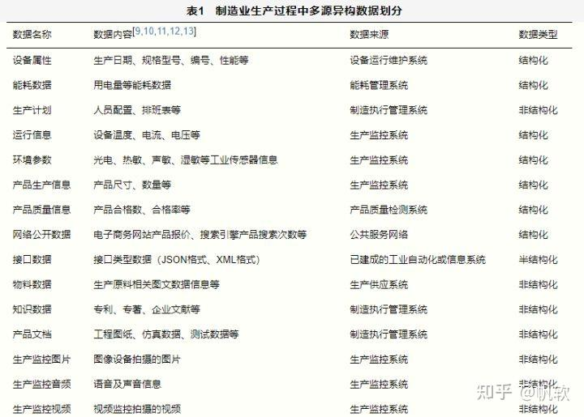
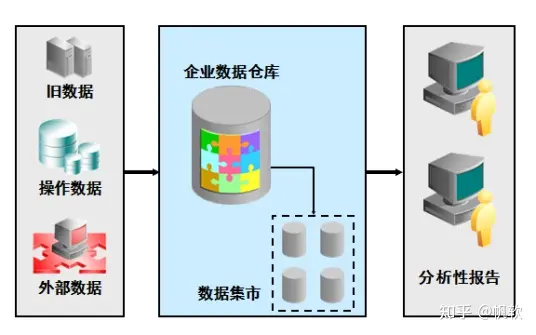

浅析多源异构数据
浅析多源异构数据
什么是多源异构数据
多源：指数据的来源具有多源性。多源异构数据来自多个数据源，包括不同数据库系统和不同设备在工作中采集的数据集。不同的数据源所在的操作系统、管理系统不同（例如OA、CRM、HR、MES、SCM），数据的存储模式和逻辑结构不同，数据的产生时间、使用场所、代码协议等也不同，这造成了数据“多源”的特征。
异构：指数据种类及形态具有复杂性，即异构性。异构数据体现在五个层次上：
- 计算机体系结构的异构；数据的物理存储来源于不同体系结构的计算机中，如：大型机、小型机、工作站、PC或嵌入式系统中。
- 操作系统的异构；数据的存储来源于不同的操作系统，如：Unix、Windows、Linux、OS/400等。
- 数据格式的异构；数据的存储管理机制不同，可以是关系型数据库系统，如：Oracle、SQL Server、DB2等，也可以是文件行二维数据，如：txt、CSV、XLS等。
- 数据存储地点异构；数据存储在分散的物理位置上，此类情况大多出现在大型机构中，如：销售数据分别存储在北京、上海、日本、韩国等多个分支机构的本地销售系统中。
- 数据存储的逻辑模型异构；数据分别在不同的业务逻辑中存储和维护，从而相同意义的数据存在表现的异构；如：独立的销售系统和独立的采购系统中存在部门的编码不一致等。
异构数据往往不是一个层面的异构，而是在多个层面上都存在异构。异构数据整合的目标就在于实现不同结构的数据之间的数据信息资源、硬件设备资源和人力资源的合并和共享。其中关键的一点就是以分散的局部的数据为基础，通过各种工具和处理逻辑建立全局的统一的数据或视图。
101 异构数据采集技术的原理是通过获取软件系统的底层数据交换和网络流量包，进行包流量分析和使用仿真技术采集到应用数据，并且输出结构化数据。所以，它能做到无需软件厂商接口，异构数据直接采集，解决了和厂商协调难、接口费用高、实施周期长等问题。
多源异构数据包括：结构化数据、半结构化数据 和 非结构化数据。
① 结构化数据：指关系模型数据，即以关系数据库表形式管理的数据，结合到典型场景中更容易理解，比如企业ERP、财务系统。
② 半结构化数据：指非关系模型的、有基本固定结构模式的数据，例如日志文件、XML文档、JSON文档、E-mail等；
③ 非结构化数据：指数据结构不规则或不完整，没有预定义的数据模型，不方便用数据库二维逻辑表来表现的数据。如word、pdf、ppt及各种格式的图片、视频等。
不同类型的数据在形成过程中没有统一的标准，因此造成了数据“异构”的特征。如：制造业生成过程中多源异构数据划分表如下。
要如何融合处理多源异构数据？
1、针对多元化的结构化数据融合，主要关注在数据的ETL处理 以及时效性上：
① 表结构不同，需要做到不同类型的字段映射
②假如要新增表字段的时候，需要新增列
③ 若有表字段需要进行二次处理规范，需要支持字段转换，比如公式或其他
④新增表设计时，需要保证三大范式，这里就不展开讲了，可参考：数据库三大范式
⑤ 数据同步的时效性，例如实时同步、半小时一次、或者一天一次、或者说是需要实时同步融合，这个要根据具体业务场景来确认。
2、针对半结构、非结构化数据，因为数据分散，缺乏统一管理，需要借用专业工具
目前有两种方式来处理半结构、非结构化数据：
①提取半结构、非结构化数据中的关键信息，到结构化数据中进行二次利用，比较好处理的是半结构化（json、xml）、excel、csv，因为这种数据的结构比较统一。
② 向word、PDF这种文件提取关键信息，假如是单个文本的话，市面上有些工具可能可以实现，但假如是大批量的话，可能就需要通过程序，去自定义一些正则表达式，去进行关键信息的提取。这种一般来说，因为格式不一致，以及用途不一致，所以程序自定义的比较多。
针对这种的话，会综合考虑数据价值和投入产出比，因为这部分的数据处理较为复杂。
若想提高投入产出比，可用例如**FineDataLink**这类专业工具，去支持结构化/半结构化数据的融合集成，面向ETL数据处理场景，也可以让数据编排更简单一些，提高数据的使用价值。
另外，如若这部分历史文件的需要做到备份的话，会通过FTP或者SFTP将文件进行备份存储到文件服务器，进行文件业务分类、文件名、路径的统一管理，提供统一入口，通过权限管理的方式给到大家下载使用。
有没有软件可以实现异构数据库的统一访问
例如最起码实现如下的功能： select http://oracle.xxx from ….. ; select http://sqlserver.xxx from ….
应用程序层通过中间层调用一些标准SQL语句时方便些；
如select http://oracle.XXX from XXX where oralce.XXX.id=sqlserver.XXX.id
就是用sql语句调用2个数据库中的表跟标用一个数据库中的表一样，
例如业务上，将一个数据库中的基础数据同步到另外一个数据库中，想将检查2个不同数据库中同步过去的基础数据表中是否一致。
问题1：是否有软件可以实现异构数据库的统一访问？
答：有软件可以实现，但要想实现异构数据库的统一访问，例如select http://oracle.XXX from XXX ；where oralce.XXX.id=sqlserver.XXX.id，首先要先明白这类数据计算运行的底层逻辑是什么。
① 假如是通过异构数据库，直接进行左右关联，那这类数据的计算就是在运行软件/程序的服务器。
② 假如只是数据的一个统一访问，然后进行OLAP关联分析，用BI工具就行。
③ 假如是除了数据的统一访问，还需要进行数据的再次处理，那还是推荐通过工具，将分布在不同网络、不同服务器上的不同种的数据库中的数据，集成到一个数据库，再进行处理，这样的话，就是统一将算力放到这个新的目标数据库中，同时也不会影响原有数据库的使用，也就是数仓搭建的最常见做法。

但其实很多人，看到数仓会比较排斥，觉得这是大公司级别才会做的事情，其实不然，你可以根据你的数据库或者系统数据的体量，进行一定程度裁剪，搭建符合自己数据使用习惯的数仓就行。
现在这类市面上有很多工具，可以做到这点，开源的有kettle，商业的有FineDataLink，通过设置流程，很快就能完成异构数据库的数据迁移集成。（ps：需要说明，这类开源工具，在使用过程中，会容易出现数据库报错或者连接数不足等异常，且insert/update会占用大量的CPU资源，如果对数据要求高，不太推荐使用开源工具）。
问题2：做一个分布式数据库是否可以实现这个功能？
答：可以。但最好是在异构数据库很多，数据量很大时，再去选择分布式数据库，这样数据的存储能力和算力都会进一步提升。假如数据量单机数据库就能支撑，其实就没必要采用分布式数据库。
为什么呢？因为一般来说，分布式数据库都是由主节点+N个计算存储节点，具备可扩展、高可用（当部分节点失效时，其他节点能够接替它继续服务）的能力，因此一般购买成本、运维成本都比较高。所以，如果数据量单机数据库就能支撑，采用分布式数据库就比较“浪费”，性价比不如使用上面提到的数据集成工具高。
参考文档：
 微信
微信